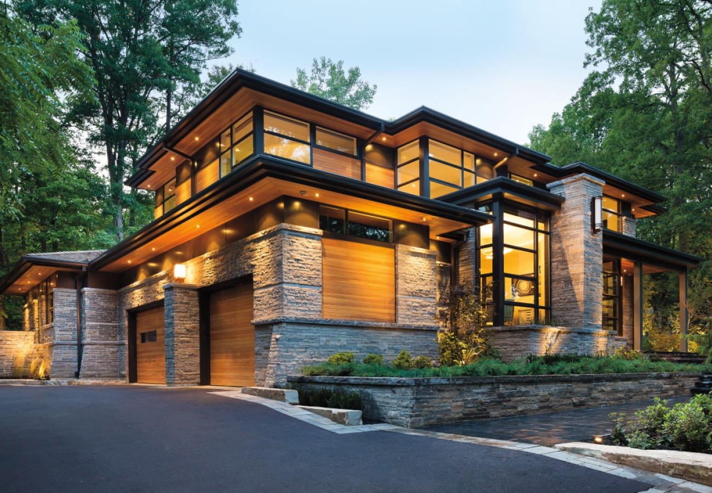
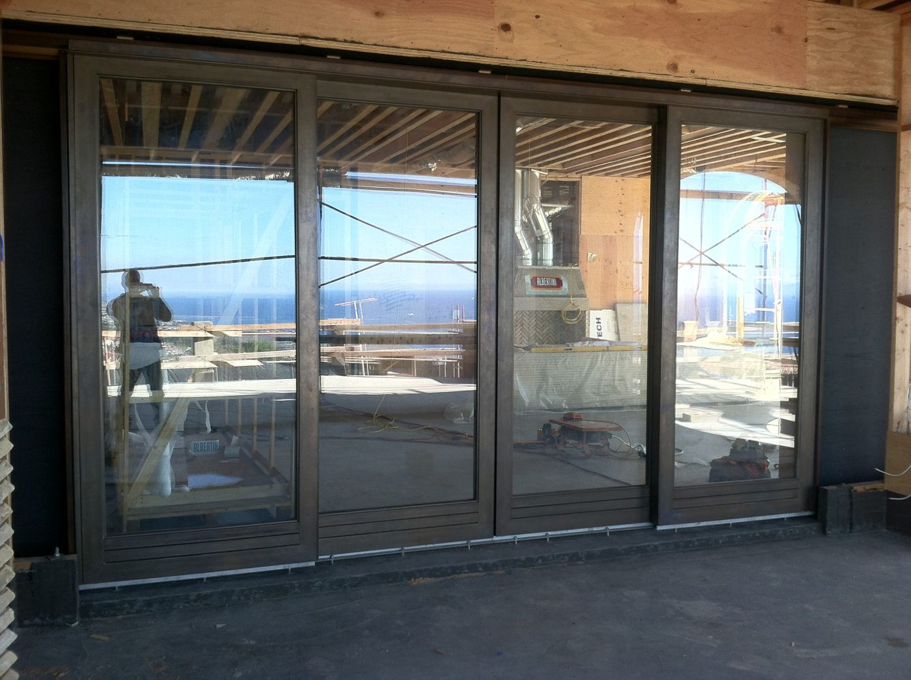

Large Opening Screen Installation
We install retractable, pull-down and sliding screen systems for wide patio openings, including bifold, multi-slide and lift-and-slide doors. The system is selected around the opening size, door operation and how the space is used.
Types Of Screen Systems We Install
Retractable Screens for Large Openings
Retractable screens fit into a discreet housing and extend across wide openings, keeping the view clear when not in use and providing coverage for bifold, multi-slide and lift-and-slide doors.
Pull-Down Screen Installation
Pull-down screens work well for covered patios and tall openings, lowering into place from an overhead housing to cover the opening without a visible frame when retracted.
Sliding Screens for Wide Openings
Sliding screen panels track alongside the door on their own dedicated rail, sized to match wide single- or multi-panel openings.
Screens for Bifold and Multi-Slide Doors
Screen systems sized and installed to match bifold and multi-slide door configurations, so the screen tracks alongside the door panels and operates smoothly with the opening.
Screens for Lift-and-Slide Doors
Lift-and-slide doors need screen systems built for their track and panel width. We size and install screens to match the specific door system and opening.
Custom Patio-Screen Configurations
Unusual openings — corner openings, mixed door types, or non-standard widths — are reviewed individually to find a screen configuration that actually fits and operates well.

Housing, Track & Selection Considerations
The right screen system depends on details most homeowners don’t think to check until installation day. We review these before recommending a system:
- Housing placement — whether there’s room for a discreet retractable or pull-down housing at the head or side of the opening
- Track compatibility with the existing or planned door system
- Opening width and height limits for each screen type
- Wind and weather exposure at the specific opening
- How often the screen will actually be used, which affects mesh and hardware selection
Manual operation is standard on the systems we install. If you’re interested in motorized options, ask during your consultation and we’ll confirm what’s available for your opening.
Measuring & Installation Process
Photos & Opening Details
Photos of the opening from inside and outside, plus the door type (bifold, multi-slide, lift-and-slide, or standard), help us scope the right system.
Measurement
We take precise width, height, and housing-clearance measurements on site before ordering any screen system.
System Selection
We recommend a specific screen type based on the opening, door coordination, and how the space is used.
Installation
We install the housing and track, then fit and test the screen against the actual door or window system.
Adjustment & Walkthrough
We test full operation, make any final adjustments, and walk you through how to use and maintain the system.
Repair & Maintenance
Screen systems see a lot of daily use and can go out of alignment or develop worn mesh over time. We inspect and repair housings, tracks, and mesh, subject to inspection and part availability. If your screen sticks, won’t retract fully, or has torn mesh, request service on our Service & Maintenance page.
Screen & Large-Opening Projects


Screen Installation FAQ
Retractable screens extend horizontally from a side housing across a wide opening. Pull-down screens lower vertically from an overhead housing, which works well for covered patios and tall openings where a side housing isn’t practical.
In most cases, yes. We measure the existing door and opening to confirm which screen systems will track and operate correctly alongside it before recommending a specific product.
It depends on the screen system and opening conditions. Large-opening screen systems are specifically designed for wider spans than a standard screen door, but exact limits vary by product, so we confirm feasibility during measurement.
Manual operation is standard on the systems we install. Ask during your consultation about motorized options for your specific opening and we’ll confirm what’s available.
Yes. We coordinate screen installation with builders and remodel timelines so the housing and track are planned for during construction rather than added as an afterthought.
Yes, we inspect and repair screen housings, tracks, and mesh, subject to inspection and part availability. Request service on our Service & Maintenance page.
Photos of the opening, approximate width and height, and the door type (bifold, multi-slide, lift-and-slide, or standard) are enough for us to start. We confirm exact measurements on site before ordering.
Need a Screen for a Large Opening?
Send photos, approximate measurements and the door type so we can review the opening.